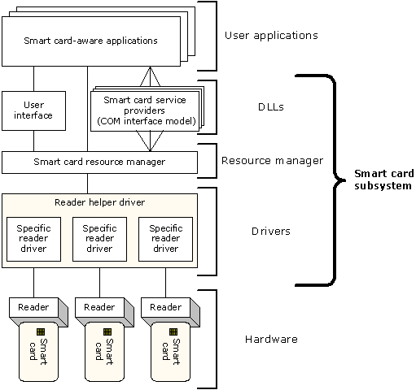

The basic parts of the smart card subsystem are based on PC/SC standards (see the specifications at https://pcscworkgroup.com). These basic parts include:
The following illustration shows the relationships of these parts in the overall smart card architecture.

For information about how the smart card subsystem works with other services available in the Microsoft Internet Security Framework, see Relation to Other Services.
For information about smart card authentication, see the following topics.
| Topics | Contents |
|---|---|
| Smart Card Concepts | Basic concepts and description of the interaction between users and smart cards. |
| Smart Card Resource Manager | Information about the resource manager API, which manages the access to readers and to smart cards. |
| Smart Card User Interface | Information about the smart card common dialog box. |
| Smart Card Service Providers | Information about interfaces, commands, and wrappers that provide smart card capabilities. |
Â
Additionally, current Microsoft smart card developments can be found at https://www.microsoft.com/whdc/device/input/smartcard/default.mspx.
Â
Â